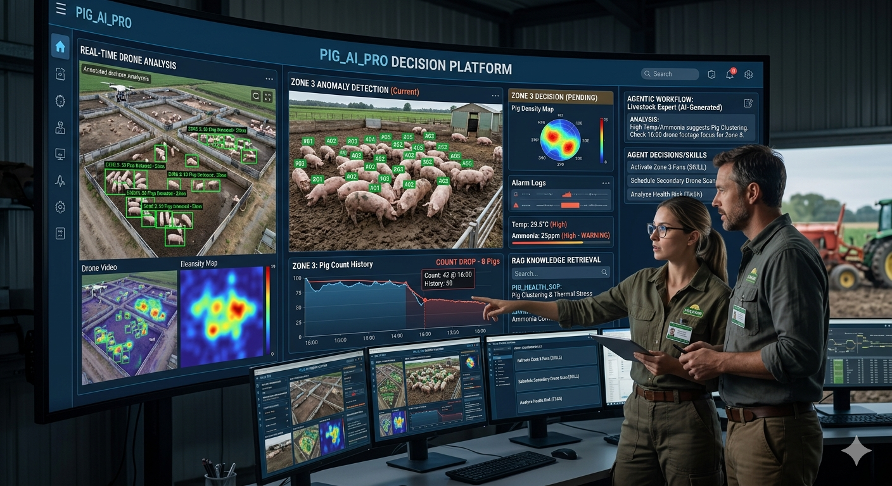

← 返回系統總覽
生成式 AI：後端伺服器智慧分析
從資料庫撈取邊緣端數據，透過 RAG 知識庫與 AI Agent 自動生成農場巡檢報告
點擊下方任一階段，進入詳細介紹頁面
STAGE 1
❶ 結構化數據整合
PostgreSQL / Supabase
定時從資料庫撈取 YOLO 計算的豬隻數量、環境感測器歷史數據，整理為乾淨的 JSON。
查看詳情 →
▶
STAGE 2
❷ RAG 知識檢索
LangChain / ChromaDB
預先將養豬規範、疾病百科、SOP 切碎並建索引，讓 AI 隨時調閱「教科書」。
查看詳情 →
▶
STAGE 3
❸ AI Agent 推理
CrewAI / GPT-4o
設定 Agent 角色與任務流程，讓 AI 思考、拆解、反思，整合所有數據與知識生成決策。
查看詳情 →
▶
STAGE 4
❹ 技能與輸出
ReportLab / Line Bot
將 Agent 結論轉為精美 PDF 報告，並在偵測到嚴重異常時主動推送 Line 通知。
查看詳情 →

系統運作示意圖